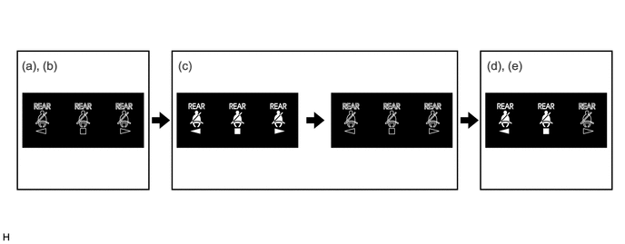

功能
后排座椅安全带警告
后排座椅安全带警告功能利用收音机和显示屏接收器总成指示后排座椅安全带的状态。
组合仪表总成根据后门的后排座椅安全带带扣开关和门控灯开关将后排座椅安全带警告信号发送至收音机和显示屏接收器总成。接收到信号时，收音机和显示屏接收器总成操作指示灯。如果需要发出警告，组合仪表总成内的蜂鸣器也将鸣响。
导致发出后排座椅安全带警告的操作流程如下：

| 步骤 | 转换条件 | 时钟显示 | 蜂鸣器 |
|---|---|---|---|
|
*1：汽油车型 *2：HV 车型 *3：鸣响周期为 1.2 秒。 *4：鸣响周期为 0.4 秒。 |
|||
| (a) | 发动机开关*1 或电源开关*2 置于 OFF 位置。 | 未显示警告。 | 不鸣响 |
| (b) | 打开后门，然后将其关闭。 | ||
| (c) | ·
将发动机开关*1 或电源开关*2 切换至 ON 位置。 ·
系紧座椅安全带。 |
·
在此情况下，不论有几名乘员，都会显示所有座椅未系紧座椅安全带。如果座椅安全带随后系紧，则相关座椅的显示将消失。 ·
警告会显示约 30 秒，然后熄灭。 |
|
| (d) | 任一后排座椅安全带未系紧。 | 无论有几位乘员，都会显示所有未系紧座椅安全带的座椅。 | 如果车速超过 20 km/h：
1. 鸣响 6 秒*3 2. 再次鸣响 30 秒*4 |
| (e) | 满足下列任一条件时，蜂鸣器将停止鸣响。
- 重新系紧座椅安全带。 - 车速降至低于约 2 km/h，施加驻车制动或换档杆置于 P。 |
·
无论有几位乘员，都会显示所有未系紧座椅安全带的座椅。 ·
警告会显示约 36 秒，然后熄灭。 |
停止鸣响 |